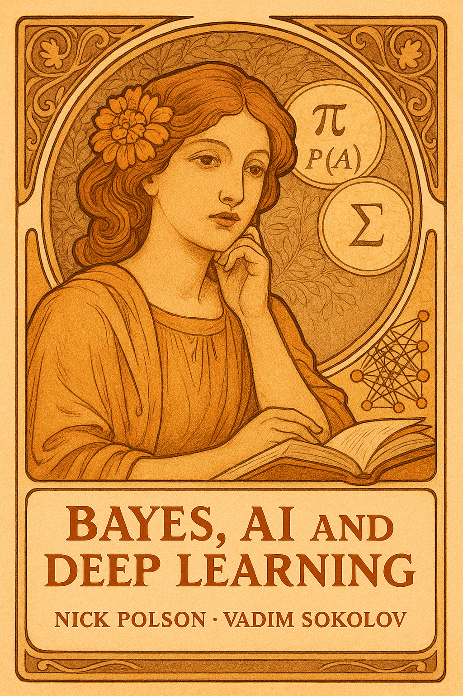

Bayes, AI and Deep Learning
Foundations of Data Science

Copyright © 2026 Nick Polson and Vadim Sokolov. First edition, 2026.
Digital Object Identifier (DOI): 10.5281/zenodo.24060823
License: distributed under the Creative Commons Attribution 4.0 International License (CC BY 4.0), https://creativecommons.org/licenses/by/4.0/: you may copy, share and adapt this book for any purpose, provided you credit the authors. Figures credited to another source are not covered by this license and remain under the terms of their owners. The code is released under the MIT License.
Preface
Modern AI rests on three foundations: Bayesian reasoning, statistical learning, and deep neural networks. This book develops all three, starting from probability and decision theory, progressing through classical machine learning, and ending with transformers and autonomous agents. Whether you are a business analyst seeking operational intuition or an engineer building systems, this book provides mathematical depth and practical fluency. Throughout, uncertainty is a first-class citizen: the foundation for better algorithms and clearer thinking about data, models, and decisions.
The material draws from courses we teach to MBAs at the University of Chicago Booth School of Business and engineers at George Mason University. These two audiences demand different emphases (business students want operational intuition and decision frameworks; engineers want mathematical rigor and implementation details), but both use the same tools: the same Bayesian methods that power marketing analytics and financial risk modeling also drive robotics and autonomous systems.
When John McCarthy coined “artificial intelligence” (AI) in 1955 (McCarthy et al. 1955), the field soon came to mean symbolic reasoning, hand-coded rules and algorithms. The foundations trace further back: Claude Shannon’s information theory (Shannon 1948), von Neumann and Morgenstern’s game theory and decision science (Neumann and Morgenstern 1944), and Richard Bellman’s dynamic programming (Bellman 1952). The shift to data-driven learning, models that generalize from examples, defines modern AI. The contrast:
The Kalman filter (Kalman 1960) was part of the onboard navigation of Apollo 11 in 1969 (McGee and Schmidt 1985). Today’s autonomous systems, from rocket landings to self-driving cars, rely on optimization and learning algorithms that would have been computationally infeasible then.
How we interact with AI as consumers has evolved through four stages:
- Search. Early search engines answered a single question with a ranked list of webpages. The PageRank algorithm, developed by the Google founders (Brin and Page 1998; Page et al. 1999), used power iterations on the link graph to rank these pages by importance.
- Suggestions. Suggestion algorithms were popularized by Netflix (Koren, Bell, and Volinsky 2009) and Amazon (Linden, Smith, and York 2003), which used collaborative filtering to recommend movies and products to users based on their history and that of others.
- Summaries. Systems like ChatGPT go beyond retrieval: they summarize, synthesize and generalize across domains.
- Agents. Agents are autonomous systems that perceive their environment, reason about goals, and take actions, orchestrating tools to execute multi-step tasks without step-by-step human guidance.
Building these systems draws on the same foundations: probabilistic reasoning to handle uncertainty, statistical learning to extract patterns, and deep neural networks trained at scale.
The book is organized into three parts:
- Part I: Bayes. Probability, decision theory, Bayesian inference, hypothesis testing, stochastic processes, Gaussian processes, and reinforcement learning.
- Part II: AI. Pattern-matching algorithms including regression, decision trees, and generalized linear models, with forecasting and model selection.
- Part III: Deep Learning. Neural network architectures, optimization via gradient descent, convolutional networks for vision, natural language processing, large language models, and autonomous agents.
Chapters include derivations, Python and R code, exercises and case studies.
The code of the chapters is also available as stand-alone files, one per language per chapter, in the code/ folder of the book repository at https://github.com/VadimSokolov/bayes_ai_deep_learning, for example code/03-bl.R. Results of computations that take long to run are stored in results/, and the datasets come as data.zip with each release and unpack into data/. The README.md of the repository names the files that list the packages the code needs. The computing exercises of each chapter are in the same repository, as notebooks in the exercises/ folder, and a short linear algebra tutorial is an appendix of the online edition, https://vsokolov.org/bayes_ai_deep_learning/appendix-linalg.html.